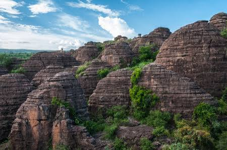
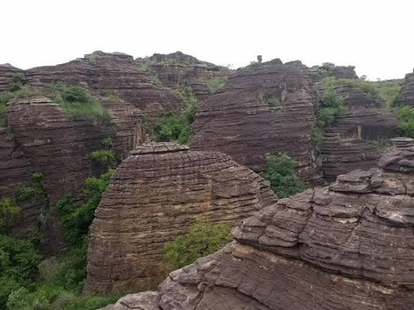
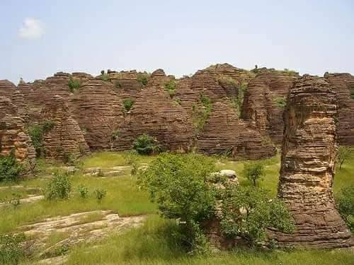

Bienvenue sur la page: des Dômes de Fabedougou

Les Dômes de Fabédougou sont des collines arrondies en grès massif. Situés à 15 km de Banfora, ils surgissent au milieu de la savane. Leur forme parfaite fait penser à des bulles de pierre géantes. Certains dômes atteignent 60m de hauteur et 200m de diamètre. Leur couleur varie du beige clair au rouge ocre selon le soleil. C’est un paysage unique, différent des cascades et des pics. Le site est peu fréquenté, donc très calme et authentique. Les bergers Peuls y font paître leurs troupeaux depuis des siècles. Marcher entre les dômes donne une impression d’autre planète. Fabédougou est un secret bien gardé de la région.

La légende Sénoufo dit que les dômes sont des greniers des dieux. Ils contiendraient les semences de toutes les plantes du monde. D’autres racontent qu’un géant a posé ses bols retournés là. Certains dômes sont considérés comme sacrés par les villages. On n’y monte pas sans l’accord du chef de terre. Des rituels de pluie et de fertilité y sont encore pratiqués. Les femmes viennent demander la fécondité au pied des roches. Chaque dôme a un nom lié à un ancêtre ou un événement. Le respect de ces croyances protège le site de la dégradation. Fabédougou est autant un lieu de foi qu’un paysage.

L’ascension des dômes est facile pour les plus petits. Le grès est compact, avec des prises naturelles pour les mains. Depuis le sommet, la vue à 360° sur la plaine est totale. On voit Banfora, les champs de cannes et les monts au loin. Le lever de soleil teint les dômes en rose et doré. C’est le moment idéal pour les photos panoramiques. Apporte peu d’eau, l’ombre est rare sur les roches. Évite les heures de midi, la pierre devient brûlante. Des guides du village peuvent t’accompagner pour l’histoire. L’expérience est physique mais très accessible.

La flore des dômes est adaptée à la sécheresse. Des karités, nérés et baobabs poussent dans les fissures. Ces arbres survivent grâce aux racines qui cherchent l’eau. Les lichens colorent la pierre en vert et orange. Des reptiles comme les agames se chauffent sur les roches. Les oiseaux de savane nichent dans les creux des dômes. L’écosystème est fragile mais très résistant. Chaque pluie fait pousser des herbes éphémères au pied. Le cycle vie-sécheresse est visible partout ici. Fabédougou enseigne l’adaptation de la nature.

Pour tes visuels, joue sur les formes et les ombres. Photographie un dôme seul pour l’effet minimaliste. Aligne 2-3 dômes pour créer de la profondeur. Inclus un berger ou un arbre pour l’échelle humaine. Le contre-jour du soir découpe les silhouettes parfaitement. Le matin, la brume basse entoure la base des dômes. Le drone révèle la disposition aléatoire des formations. Chaque angle donne une nouvelle composition graphique. C’est un terrain de jeu pour photographes créatifs. Fabédougou, c’est la géométrie de la terre.

C'est envoutant!!